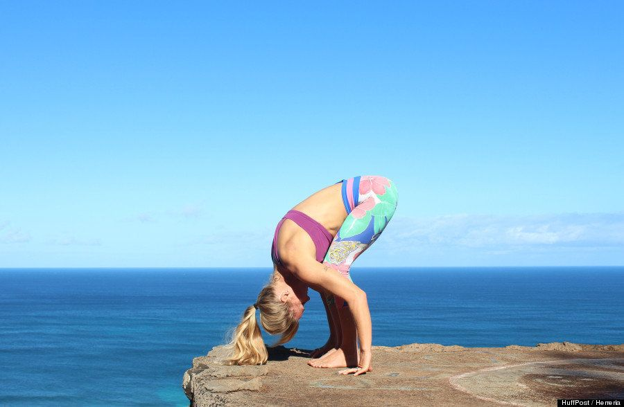

Pinza de pie (Uttanasana)
Esta postura abre la parte posterior de las piernas, facilita la descompresión de la columna y permite que la sangre oxigenada se mueva desde el corazón hacia la cabeza.
Comienza con la postura de la montaña. Dóblate siguiendo el vértice de tu cintura y exhala a medida que desciendes el torso, manteniendo la columna tan recta como puedas. Deja que la cabeza cuelgue por su propio peso y relaja la mandíbula. Mantén los pies separados a la altura de las caderas, si eres principiante, o los pies juntos si eres un estudiante intermedio o avanzado.
Errores comunes: Mantener la columna firme es más importante que tener las piernas rectas. Dobla las rodillas tanto como haga falta para poder mantener la espalda recta y tu pecho en contacto con los muslos.
Sochocki dice: "La perseverancia en el yoga es importante y , con el tiempo, el lado posterior de las piernas se abrirá con esta pinza de pie. Mantén las rodillas suaves y no las bloquees".